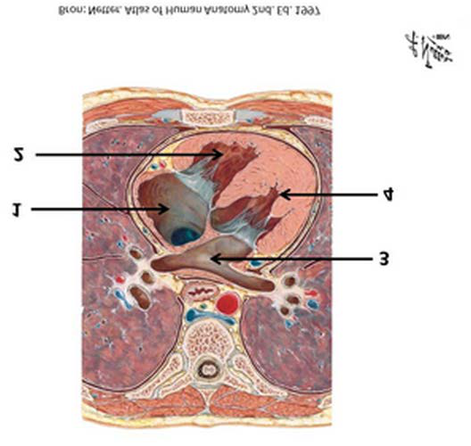
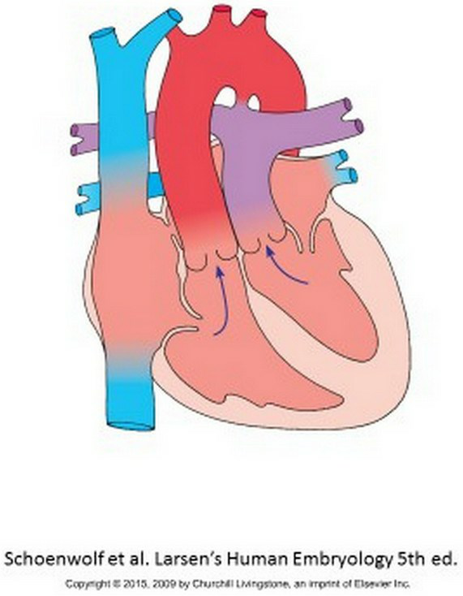
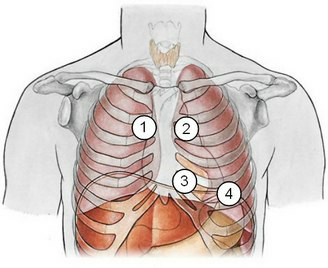
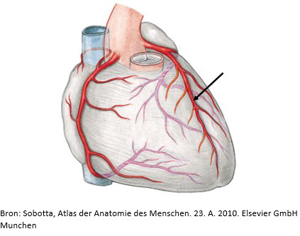
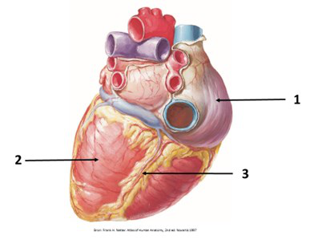
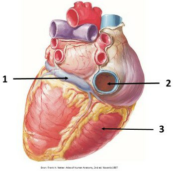

Menu
Circulatie en volumeregulatieOefentoets Hart & Circulatie
Examen inleveren
Weet je zeker dat je het examen afsluit?
Examen resetten
Al je antwoorden worden gewist en je begint opnieuw. Weet je het zeker?
Jouw resultaten
Circulatie en volumeregulatie · Oefentoets Hart & Circulatie
—
/ 40
0
Goed
0
Fout
0
Niet beantwoord
Vraag 1

Welke structuren worden met de onderstaande nummers aangeduid?
Sleep een optie naar de bijbehorende rij, of tik eerst op een kaart en dan op een rij.
1
Sleep hier naartoe
2
Sleep hier naartoe
3
Sleep hier naartoe
4
Sleep hier naartoe
Vraag 2
Op een korte-as beeld van het hart bij een patiënt meet u dat de straal (Engels: radius) van de linker ventrikel 2x groter is dan normaal. De wanddikte van deze linker ventrikel, en de bloeddruk van de patiënt zijn wel normaal. Wat kunt u concluderen over de wandspanning (Engels: wall stress) in de wand van deze linker ventrikel?
Vraag 3
Het hartminuutvolume is gedefinieerd als:
Vraag 4
Wat zijn de functies van de volgende urineweg structuren?
M. detrusor vesicae (bij gevulde blaas)
Inwendige urethra sphincter (bij ejaculatie van de man)
Het hart ontspant en trekt samen tijdens 1 hartslag. Plaats de juiste termen achter de nummers.
Sleep een optie naar de bijbehorende rij, of tik eerst op een kaart en dan op een rij.
1
Sleep hier naartoe
2
Sleep hier naartoe
3
Sleep hier naartoe
4
Sleep hier naartoe
Vraag 7
Er is een sterke associatie tussen het hebben van een hoog cholesterol gehalte in bloed en het risico op hart- en vaatziekten. Macrofagen in de bloedvatwand spelen een belangrijke rol omdat ze cholesterol stapelen en veranderen in inflammatoire schuimcellen.
Hoe nemen ze dat cholesterol op?
Vraag 8
Welke aangeboren hartafwijking ontstaat indien de septatie van de outflow tract van het embryonale hart niet goed verloopt?
Vraag 9
Een man van 50 jaar heeft sinds een uur heftige pijn op de borst. Hij wordt onderzocht op de eerste hulp. De arts laat een ECG maken en vraagt troponine aan.
Welke bewering is het meest correct?
Vraag 10
Bij diastolisch hartfalen
Vraag 11
Geleidingssysteem van het hart. Plaats onderstaande onderdelen van het hart in de juiste volgorde, dat wil zeggen in de volgorde die de impulsen van het hart gedurende iedere hartcyclus doorlopen (positie 1 = eerst).
Sleep een optie naar de bijbehorende rij, of tik eerst op een kaart en dan op een rij.
Positie 1
Sleep hier naartoe
Positie 2
Sleep hier naartoe
Positie 3
Sleep hier naartoe
Positie 4
Sleep hier naartoe
Positie 5
Sleep hier naartoe
Positie 6
Sleep hier naartoe
Vraag 12
U wilt onderzoeken of bij uw patiënt een insufficiëntie van de tricuspidaalkleppen voorkomt. Welk vlak brengt u dan in beeld met echo?
Vraag 13
In de pacemakercellen heeft acetylcholine het volgende effect. Het
Vraag 14
Een vrouw van 21 jaar heeft sinds een paar uur pijn op de borst aan de linkerzijde. De pijn is stekend van karakter, en neemt toe als ze diep inademt. Ze heeft geen dikke of pijnlijke kuiten. Ze rookt en gebruikt de pil.
Welk aanvullend onderzoek kan het best worden gedaan om een longembolie uit te sluiten?
Vraag 15
Welke aangeboren hartafwijking is hier afgebeeld?

Vraag 16
Tijdens de ejectiefase van het hart:
Vraag 17
Fasen van de hartcyclus. In de afbeelding worden de druk- en volumecurven van de linkerventrikel getoond. Plaats de begrippen bij het juiste witte kader (drukcurve bovenaan, volumecurve daaronder).
Sleep een optie naar de bijbehorende rij, of tik eerst op een kaart en dan op een rij.
De beide ureteren lopen schuin door de blaaswand heen. Wat is de functie van deze schuine passage?
Vraag 19
Pacemakercellen in de sinusknoop hebben een:
Vraag 20
Een 68-jarige vrouw presenteert zich met vermoeidheid. Bij laboratoriumonderzoek van het bloed (plasma) is het natriumgehalte 138 mmol/l (normaal), het kaliumgehalte 5.8 mmol/l (verhoogd) en het plasmakreatininegehalte 105 µmol/l (licht verhoogd). U denkt aan geneesmiddelmisbruik.
Welke groep geneesmiddelen is het meest waarschijnlijk?
Vraag 21
Wat is de definitie van het hartminuutvolume?
Vraag 22
In de pacemakercellen heeft acetylcholine het volgende effect. Het:
Vraag 23
De lange termijn regulatie van de arteriële bloeddruk staat onder invloed van het bloedvolume, en andersom.
Kies de juiste volgorde waarin een toename in arteriële bloeddruk leidt tot een afname in het hartminuutvolume:
Vraag 24

Auscultatie harttonen. Op welke plaats op de thorax zet u uw stethoscoop om de verschillende hartkleppen te beluisteren? Koppel elk nummer aan de juiste klep.
Sleep een optie naar de bijbehorende rij, of tik eerst op een kaart en dan op een rij.
1
Sleep hier naartoe
2
Sleep hier naartoe
3
Sleep hier naartoe
4
Sleep hier naartoe
Vraag 25
Ernstig bloedverlies kan leiden tot een hypovolemische shock. Welk compensatoir mechanisme wordt geactiveerd als gevolg van ernstig bloedverlies?
Vraag 26
Welk(e) effect(en) is (zijn) het resultaat van het werkingsmechanisme van Ca-antagonisten?
Vraag 27
De fossa ovalis in het volwassen hart is terug te voeren op de embryonale ontwikkeling. Het is het derivaat van een foramen dat in de embryonale en foetale periode bestaat tussen:
Vraag 28
De interactie tussen myosine en actine is nodig voor contractie van de sarcomeren. De binding van ATP aan myosine resulteert in:
Vraag 29
Onder welke condities wordt de relatie tussen de eind-systolische druk en linker ventrikelvolume (ESPVR) steiler?
Vraag 30
Bekijk de afbeelding van de coronaire arteriën. Welke coronairarterie of tak is aangeduid met de pijl?

Vraag 31
Het geleidingssysteem van het hart zorgt voor een gecoördineerde samentrekking van de verschillende delen van de hartspier waardoor het bloed in de juiste richting wordt gepompt.
Plaats de onderdelen van het hart in de juiste volgorde die de impulsen gedurende iedere hartcyclus doorlopen (1 = eerste, 6 = laatste).
Sleep een optie naar de bijbehorende rij, of tik eerst op een kaart en dan op een rij.
sinusknoop
Sleep hier naartoe
atriumwand
Sleep hier naartoe
atrio-ventriculaire knoop
Sleep hier naartoe
bundel van His
Sleep hier naartoe
linker en rechter bundeltak
Sleep hier naartoe
ventrikelwand
Sleep hier naartoe
Vraag 32
Een patient met systolisch hartfalen heeft een linker ventrikel ejectiefractie (EF) van 40%, zijn hartfrequentie (HR) is 80/min en zijn cardiac output (CO) is 4 liter/min.
Wat is het linker ventrikel eind-diastolisch volume (EDV) van deze patient? Kies de range met het goede antwoord.
Vraag 33
Wanneer treedt de eerste harttoon op?
Vraag 34

Sleep de nummers naar de juiste structuur. Kies bij elk nummer op de afbeelding de bijbehorende structuur.
Sleep een optie naar de bijbehorende rij, of tik eerst op een kaart en dan op een rij.
Nummer 1
Sleep hier naartoe
Nummer 2
Sleep hier naartoe
Nummer 3
Sleep hier naartoe
Vraag 35
Waaruit bestaat een standaard ECG?
Vraag 36
Na het sluiten van de mitralisklep begint de:
Vraag 37

Plaats de nummers bij de juiste structuur.
Sleep een optie naar de bijbehorende rij, of tik eerst op een kaart en dan op een rij.
Nummer 1
Sleep hier naartoe
Nummer 2
Sleep hier naartoe
Nummer 3
Sleep hier naartoe
Vraag 38
In de pacemakercellen heeft noradrenaline het volgende effect.
Het ...
Vraag 39
Na het sluiten van de aortaklep begint de:
Vraag 40
Wat is naast een hoog LDL cholesterolgehalte in het bloed een belangrijke risicofactor voor de ontwikkeling van hart- en vaatziekten?